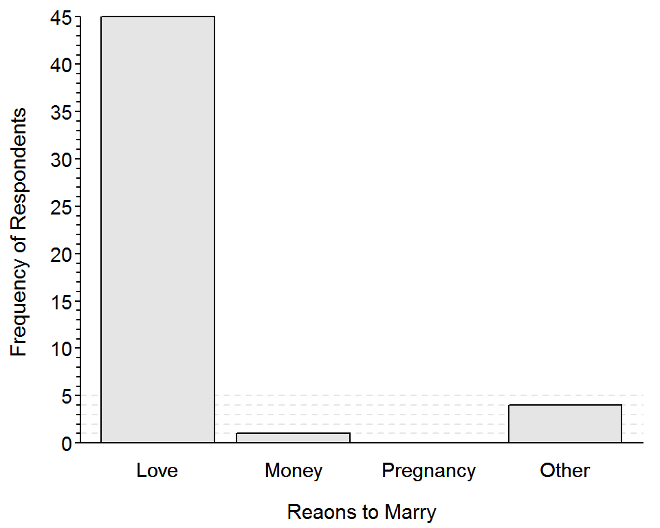

Bar Chart I
 A Northland College student asked 50 of her peers “Why should people get married (Select Love, Money, Pregnancy, or Other)?” Her results are shown in the bar chart below. Use this information to answer the questions further below.
A Northland College student asked 50 of her peers “Why should people get married (Select Love, Money, Pregnancy, or Other)?” Her results are shown in the bar chart below. Use this information to answer the questions further below.

- What is an individual in this example?
- What type of variable is recorded?
- Construct a frequency table from this bar chart.
- Construct a percentage table from your frequency table.